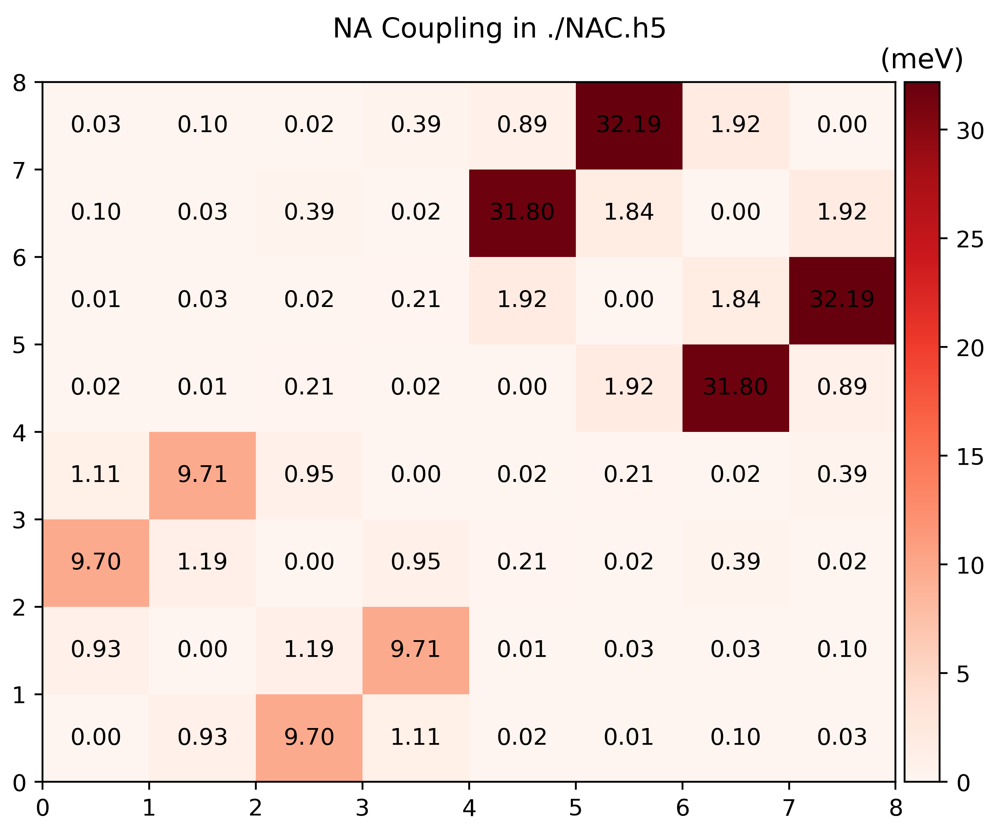
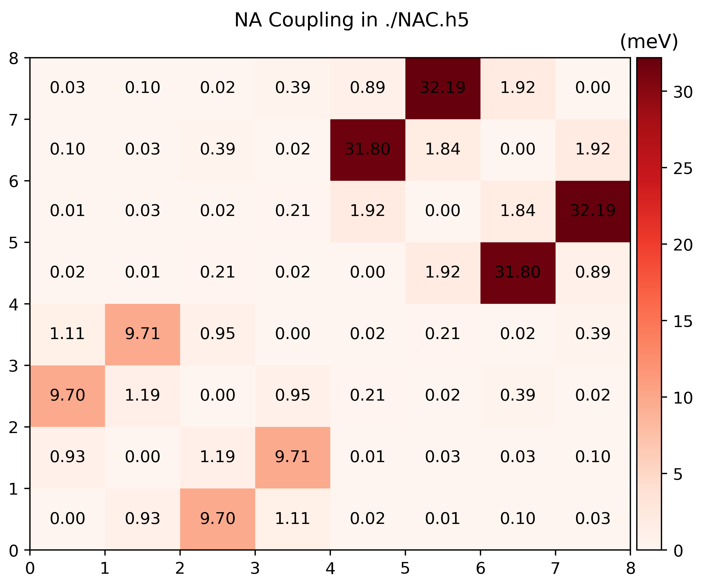

Non-adiabatic Coupling
In Hefei-NAMD non-adiabatic coupling (NAC) is defined as the derivative of wavefunctions
\begin{equation} \mathbf{D}_{jk} = \mel{\phi_j}{\dv{t}}{\phi_k} \end{equation}
where $\phi$ is the Kohn-Sham (KS) orbitals calculated by VASP.
To simulate photo-excitations process, momentum matrix element \(\mathbf{P}_{jk} = \mel{j}{\mathbf{p}}{k}\) is needed to calculate the light-matter interaction (LMI) term
\begin{equation} \mathcal{H}_{jk}^{\mathrm{LMI}} = -e \frac{\mathbf{A}}{m_e} \mel{j}{\mathbf{p}}{k} \end{equation}
in which $\mathbf{p}$ is the momentum opeartor, and \(\mathbf{A}\) is the vector potential of external field.
NOTE: namd_lmi is capable of calculating both \(\mathbf{D}_{jk}\) and \(\mathbf{P}_{jk}\).
Help message
$ namd_lmi nac
Calculate non-adiabatic coupling (NAC) including `<j| d/dt |k>` and momentum matrix `<i| p |j>`
Usage: namd_lmi nac [OPTIONS]
Options:
-n, --nthreads <NTHREADS>
Number of threads for parallel calculation.
If 0 is set, it will fall back to the number of logic CPU cores of you machine.
[default: 0]
-c, --config <CONFIG>
Config file name.
Aliases: "cfg", "conf".
[default: nac_config.toml]
--generate <GENERATE>
Generate auxiliary files for the calculation and analysis.
The calculation will not run if this flag is set.
Alias: "gen"
Possible values:
- config-template: Generate config template for NAC calculation. Aliases: "config", "cfg", "conf"
- postprocess-template: Generate post-process scripts for NAC analysis. Aliases: "post-process", "postprocess", "pp"
-h, --help
Print help (see a summary with '-h')
Procedures
-
Generate a configuration template.
$ namd_lmi nac --generate conf 2024-11-19 20:26:10 [ INFO] Global logger initialized with targets being stderr and "./globalrun.log" 2024-11-19 20:26:10 [ INFO] Writing `01_nac_config_template.toml ...` 2024-11-19 20:26:10 [ INFO] Time used: 1.351249mswhere the
01_nac_config_template.tomlreadsrundir = "../run" ikpoint = 1 brange = [0, 0] nsw = 2000 ndigit = 4 potim = 1 temperature = 0 phasecorrection = true nacfname = "NAC.h5" -
Modify the configuration according to your AIMD parameters.
If you are familiar with the original Hefei-NAMD procedure, the parameters in
01_nac_config_template.tomlis not hard to understand:rundirstring: AIMD directory where thousands of SCF with WAVECARs lies within.ikpointinteger: Which K point to choose, the index counts from1. For now, you can only choose one K point is selectable to calculate NAC and momentum matrix elements.brange[integer, integer]: Selected band range for calculation.[100, 120]will select band from 100 to 120 to do the calculation, 21 bands in total.nswinteger: Number of steps in AIMD. If there are2000steps in yourrun/, this field should be2000.ndigitinteger: Number of digits for the index of each step. If the directories in yourrun/are00001...02000, this field should be 5.potimfloat: Time step of the AIMD, consistent with thePOTIMin INCAR during NVE.temperaturefloat: Temperature of the MD, consistent with theTEENDin INCAR during NVT.phasecorrectionbool: Do phase correction for the KS orbitals or not. Should be eithertrueorfalse. Usually this term is essential for the photo-excitation process.nacfnamestring: Output file name.
NOTE: The string fields must be surrounded with quotation mark
"". -
Do the coupling calculation.
This process is quite simple
$ namd_lmi nac -c 01_nac_config_template.toml 2024-11-19 21:06:20 [ INFO] Global logger initialized with targets being stderr and "./globalrun.log" 2024-11-19 21:06:20 [ INFO] +----------------------------------------------------------------------+ | | | _ _ __ __ _____ _ __ __ _____ | | | \ | | /\ | \/ || __ \ | | | \/ ||_ _| | | | \| | / \ | \ / || | | | ______ | | | \ / | | | | | | . ` | / /\ \ | |\/| || | | ||______|| | | |\/| | | | | | | |\ | / ____ \ | | | || |__| | | |____ | | | | _| |_ | | |_| \_|/_/ \_\|_| |_||_____/ |______||_| |_||_____| | | | +----------------------------------------------------------------------+ Welcome to use namd! current version: 0.1.0 git hash: d659586 author(s): Ionizing host: x86_64-unknown-linux-gnu built time: 2024-11-19 15:34:05 +08:00 2024-11-19 21:06:20 [ INFO] Running with 0 threads. 2024-11-19 21:06:20 [ INFO] Got NAC config: #### NAMD-lmi config for Non-Adiabatic Coupling (NAC) calculation #### #### YOU NEED TO CHANGE THE PARAMETERS IN THE FOLLOWING TO FIT YOU SYSTEM #### rundir = "../../aimd/static_ncl_40/run/" ikpoint = 1 brange = [213, 220] nsw = 2000 ndigit = 4 potim = 1 temperature = 300 phasecorrection = true nacfname = "NAC.h5" 2024-11-19 21:06:20 [ INFO] No pre-calculated NAC available, start calculating from scratch in "../../aimd/static_ncl_40/run/"/.../WAVECARs ... 2024-11-19 21:06:20 [ INFO] Calculating couplings between "../../aimd/static_ncl_40/run/0001" and "../../aimd/static_ncl_40/run/0002" ..., remains: 1999 2024-11-19 21:06:20 [ INFO] Calculating couplings between "../../aimd/static_ncl_40/run/0312" and "../../aimd/static_ncl_40/run/0313" ..., remains: 1998 2024-11-19 21:06:20 [ INFO] Calculating couplings between "../../aimd/static_ncl_40/run/1000" and "../../aimd/static_ncl_40/run/1001" ..., remains: 1997 2024-11-19 21:06:20 [ INFO] Calculating couplings between "../../aimd/static_ncl_40/run/0218" and "../../aimd/static_ncl_40/run/0219" ..., remains: 1996 2024-11-19 21:06:20 [ INFO] Calculating couplings between "../../aimd/static_ncl_40/run/0078" and "../../aimd/static_ncl_40/run/0079" ..., remains: 1995 2024-11-19 21:06:20 [ INFO] Calculating couplings between "../../aimd/static_ncl_40/run/0132" and "../../aimd/static_ncl_40/run/0133" ..., remains: 1994 ... 2024-11-19 21:08:31 [ INFO] Calculating couplings between "../../aimd/static_ncl_40/run/1370" and "../../aimd/static_ncl_40/run/1371" ..., remains: 5 2024-11-19 21:08:31 [ INFO] Calculating couplings between "../../aimd/static_ncl_40/run/1358" and "../../aimd/static_ncl_40/run/1359" ..., remains: 4 2024-11-19 21:08:31 [ INFO] Calculating couplings between "../../aimd/static_ncl_40/run/1216" and "../../aimd/static_ncl_40/run/1217" ..., remains: 3 2024-11-19 21:08:31 [ INFO] Calculating couplings between "../../aimd/static_ncl_40/run/1217" and "../../aimd/static_ncl_40/run/1218" ..., remains: 2 2024-11-19 21:08:31 [ INFO] Calculating couplings between "../../aimd/static_ncl_40/run/1215" and "../../aimd/static_ncl_40/run/1216" ..., remains: 1 2024-11-19 21:08:32 [ INFO] Time used: 72.490979406snamd_lmi nacusesrayonto utilize multi-threaded parallelism and you can specify the number of threads used by this command via-n/--nthreads. For examplenamd_lmi -c 01_nac_config_template.toml -n 32uses 32 threads to calculate the couplings. -
Visualize couplings
Run
namd_lmi nac --generate ppto get a Python script to visualize the producedNAC.h5$ namd_lmi nac --generate pp 2024-11-19 21:14:22 [ INFO] Global logger initialized with targets being stderr and "./globalrun.log" 2024-11-19 21:14:22 [ INFO] Writing `nac_plot.py` ... 2024-11-19 21:14:22 [ INFO] Time used: 1.241002ms $ python3 ./nac_plot.py Writing nac_bands.png Writing nac_nac.pngAnd the produced
.pngsshould look like 
You can modify
nac_plot.pyto visualize whatever you want.
Data fields of NAC.h5
$ h5dump -H NAC.h5
HDF5 "NAC.h5" {
GROUP "/" {
DATASET "brange" {
DATATYPE H5T_ARRAY { [2] H5T_STD_U64LE }
DATASPACE SCALAR
}
DATASET "efermi" {
DATATYPE H5T_IEEE_F64LE
DATASPACE SCALAR
}
DATASET "eigs" {
DATATYPE H5T_IEEE_F64LE
DATASPACE SIMPLE { ( 1999, 1, 8 ) / ( 1999, 1, 8 ) }
}
DATASET "ikpoint" {
DATATYPE H5T_STD_U64LE
DATASPACE SCALAR
}
DATASET "nbands" {
DATATYPE H5T_STD_U64LE
DATASPACE SCALAR
}
DATASET "nbrange" {
DATATYPE H5T_STD_U64LE
DATASPACE SCALAR
}
DATASET "ndigit" {
DATATYPE H5T_STD_U64LE
DATASPACE SCALAR
}
DATASET "nspin" {
DATATYPE H5T_STD_U64LE
DATASPACE SCALAR
}
DATASET "nsw" {
DATATYPE H5T_STD_U64LE
DATASPACE SCALAR
}
DATASET "olaps_i" {
DATATYPE H5T_IEEE_F64LE
DATASPACE SIMPLE { ( 1999, 1, 8, 8 ) / ( 1999, 1, 8, 8 ) }
}
DATASET "olaps_r" {
DATATYPE H5T_IEEE_F64LE
DATASPACE SIMPLE { ( 1999, 1, 8, 8 ) / ( 1999, 1, 8, 8 ) }
}
DATASET "phasecorrection" {
DATATYPE H5T_ENUM {
H5T_STD_I8LE;
"FALSE" 0;
"TRUE" 1;
}
DATASPACE SCALAR
}
DATASET "pij_i" {
DATATYPE H5T_IEEE_F64LE
DATASPACE SIMPLE { ( 1999, 1, 3, 8, 8 ) / ( 1999, 1, 3, 8, 8 ) }
}
DATASET "pij_r" {
DATATYPE H5T_IEEE_F64LE
DATASPACE SIMPLE { ( 1999, 1, 3, 8, 8 ) / ( 1999, 1, 3, 8, 8 ) }
}
DATASET "potim" {
DATATYPE H5T_IEEE_F64LE
DATASPACE SCALAR
}
DATASET "proj" { // This part is cropped from PROCARs
DATATYPE H5T_IEEE_F64LE
DATASPACE SIMPLE { ( 1999, 4, 8, 36, 9 ) / ( 1999, 4, 8, 36, 9 ) }
}
DATASET "temperature" {
DATATYPE H5T_IEEE_F64LE
DATASPACE SCALAR
}
}
}